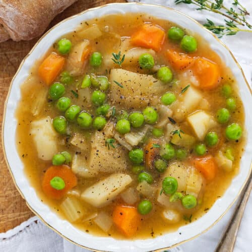

Potato stew

Stew to rip through the 4th dimension
Ingredients:
- Potatoes (any kind)
- Veggies (carrots, celery, onion)
- Frozen peas
- Garlic
- Dijon mustard
- Soy sauce
- Tomato paste
- Herbs (Italian seasoning, rosemary, thyme)
- Low-sodium vegetable broth or water
- Olive oil
- Salt & pepper
Instructions:
- Saute' onion and garlic in olive oil for 5 minutes>
- Stir in the diced carrots and celery.
- Add the rest of the ingredients.
- Stir in broth, toss to combine and bring to the boil.
- Cook gently, and after 25 minutes add the frozen peas.
- Let it simmer for 3 minutes until tender, taste, and adjust the seasoning.
- Serve with freshly ground black pepper and crusty bread. Enjoy!